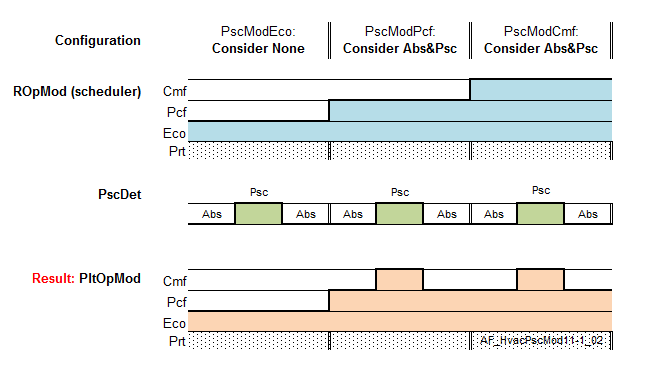

HVAC presence mode (HvacPscMod11)
Overview
应用功能》HVAC presence mode 11" (HvacPscMod11) 根据房间操作模式处理 HVAC 组件对存在探测器的响应。
Function
Input
存在检测器和 ROpMod 由内部连接提供。
Configuration
可以为每个房间操作模式配置 HVAC 组件对存在探测器 (HvacPscMod) 的响应。
该配置支持以下值：
- None: The presence detector is ignored.
- Consider present: The AF reacts to a change from absent to present (does not make sense for HVAC).
- Consider absent: The AF reacts to a change from present to absent (does not make sense for HVAC).
- Cons.present & absent: The AF reacts to a change from absent to present and vice-versa.
Output
响应 (HvacPscMod) 转发到 AF HvacPltModxx（通过内部连接）。
BACnet 客户端还可以监控 HvacPscMod。
Example

Configuration
 Parameters
Parameters
描述 | 范围 | 默认值 |
|---|---|---|
Presence mode for comfort 1:None | PscModCmf | 4:Consider present & absent |
Presence mode for pre-comfort 枚举见PscModCmf | PscModPcf | 4:Consider present & absent |
Presence mode for economy 枚举见PscModCmf | PscModEco | 1:None |
Presence mode for protection 枚举见PscModCmf | PscModPrt | 1:None |
Interface
界面 | 描述 | 类型 | 参考号 | 拥有者 |
|---|---|---|---|---|
HvacPscMod | HVAC presence mode 1:None | MPrcVal | ● | - |
Engineering and commissioning
- This AF is required if a presence detector is in the room and used for HVAC. It provides HvacPscMod to HvacPltModxx.
- The HVAC coordination AF reads the presence detector and provides it to HvacPltModxx.